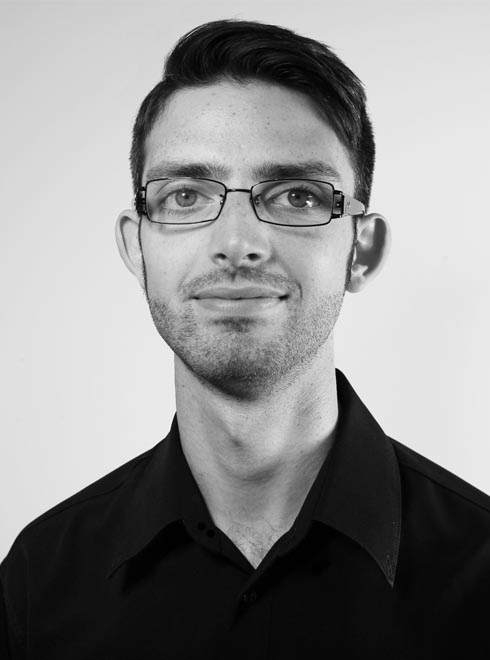

Carl DiQuinzio is freelance video editor with a diverse range of work, from marketing materials and live events, to educational content.
Since graduating from a Bachelor of Film and Digital Media, he has filled a number of production roles, reaching from live television studios to independent film sets; all contributing to a well-rounded knowledge of film and video.
Carl has helped to produce marketing materials for both private and government institutions, as well as educational materials for online tertiary courses. He has also captured and delivered a number of live musical performances.
Since graduating from a Bachelor of Film and Digital Media, he has filled a number of production roles, reaching from live television studios to independent film sets; all contributing to a well-rounded knowledge of film and video.
Carl has helped to produce marketing materials for both private and government institutions, as well as educational materials for online tertiary courses. He has also captured and delivered a number of live musical performances.